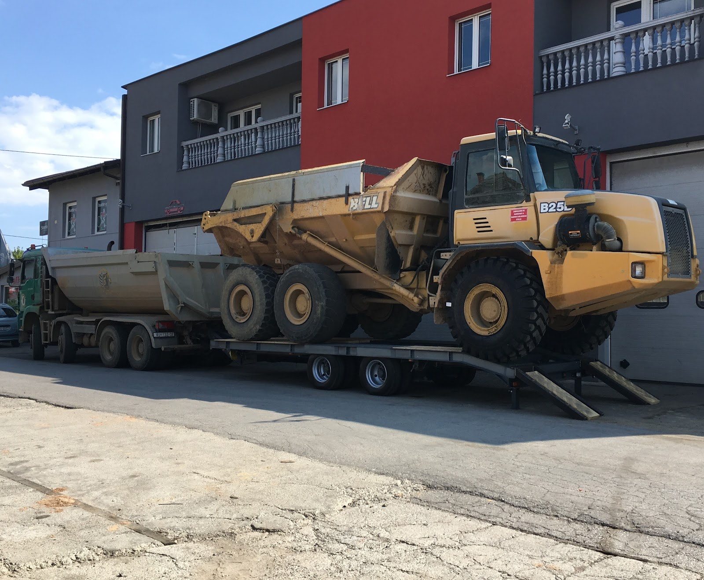
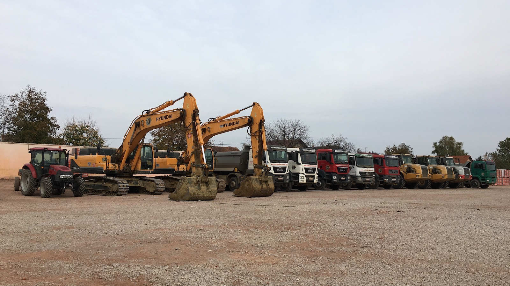

Osobna vozila
Sezonska izmjena ljetnih i zimskih guma, montaža na naplatke i balansiranje kotača.
Vulkanizer Zdeno u Vinkovcima: izmjena i balansiranje guma za osobna vozila, teretni i radni program, autodijagnostika i automehanika. Uz radionu, tvrtka ima i vlastitu građevinsku mehanizaciju.

Radiona u Ulici Alojzija Stepinca radi šest dana u tjednu. Za termin ili pitanje o dimenziji gume najbrže je nazvati.
Sezonska izmjena ljetnih i zimskih guma, montaža na naplatke i balansiranje kotača.
Gume za kamione i radna vozila. Teretni i radni program kupci posebno ističu u recenzijama.
Izmjena guma na traktorima i poljoprivrednim strojevima, uz osobni i teretni program.
Uravnoteženi kotači znače mirniju vožnju bez vibracija u volanu i ravnomjerno trošenje gume.
Autodijagnostika i automehaničarski radovi na istoj adresi kao i vulkanizer.
Bageri, zglobni damperi i kiperi za iskope, zemljane radove i rušenje. Pogledajte strojni park →

Tvrtka ne mijenja gume samo drugima. Na fotografijama koje je sama objavila vide se bageri gusjeničari, zglobni damperi, kamioni kiperi i labudica na iskopima, zemljanim radovima i rušenju objekata.
Izdvojene recenzije s Google profila radione. Tekst je doslovan, prezimena su skraćena.
„Ljubazni, stručni, od skutera da bagera – mogu sve.”Zoran D. · Google
„Odlična usluga servisa i vulkanizacije posebno za teretni i radni program vozila.”Robert J. · Google
„Brza, kvalitetna i dobra usluga izmjene i balansiranja automobilskih guma.”Ivan P. · Google
„Odličan rad firme, vlasnika i uposlenika, za svaku preporuku.”Branko · Google
„Brzo i efikasno rješavaju problem.”Stjepan K. · Google
Prosjek 4,7 iz 173 recenzije na Google kartama (19. 11. 2026.).
Od ponedjeljka do petka od 7 do 17 sati, subotom od 7 do 16 sati. Nedjeljom je radiona zatvorena.
U Vinkovcima, na adresi Ulica Alojzija Stepinca 137 (32100 Vinkovci). Lokaciju možete otvoriti na Google kartama.
Da. Osim osobnih vozila, radiona radi teretni i radni program te traktorske gume. Za veće dimenzije nazovite unaprijed i recite o kojem se vozilu radi.
Nazovite radionu na 032 360 334 ili mobitel 098 747 248. Možete poslati i upit putem obrasca na ovoj stranici: navedite vozilo, dimenziju gume i kada vam odgovara.
Tvrtka ima vlastitu građevinsku mehanizaciju (bagere, zglobne dampere i kipere) i registrirana je za pripremne radove na gradilištu. Više o tome na stranici Mehanizacija.
| Ponedjeljak | 7 – 17 |
| Utorak | 7 – 17 |
| Srijeda | 7 – 17 |
| Četvrtak | 7 – 17 |
| Petak | 7 – 17 |
| Subota | 7 – 16 |
| Nedjelja | zatvoreno |